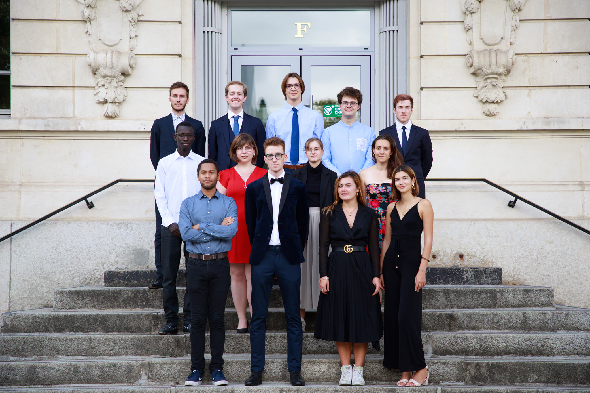

L’École Mines Saint-Étienne, depuis sa création en 1816, compte parmi les plus anciennes écoles d’ingénieurs en France et fait partie de l’Institut Mines-Télécom. Chaque année, elle accueille une centaine d’étudiants issus de classes préparatoires pour les former aux missions de l’ingénieur de demain.
Le diplôme d’Ingénieur Civil des Mines, délivré cette année à la promotion 2018, est aujourd’hui l’un des plus prestigieux en France.
C’est pourquoi notre équipe veille au bon déroulement de l’évènement pour laisser à tous un souvenir intarissable.
